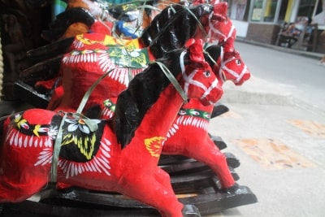
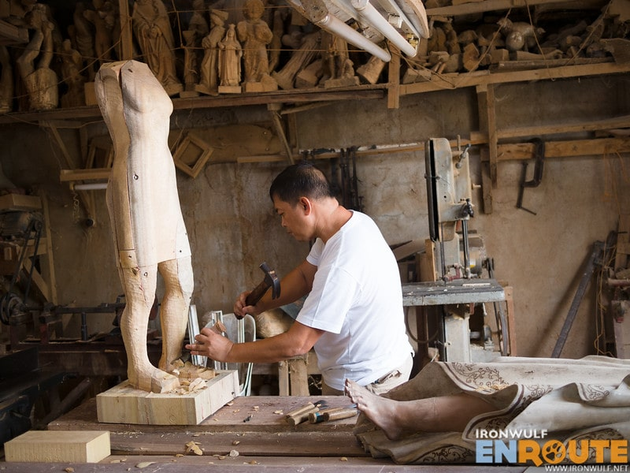
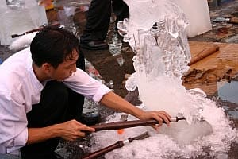

Taka(Paper Mache)
Taka was made by Paete local, Maria Piday. During Christmas, Piday was in charge of the church's decorations. The wooden angels and cherub was heavy causing the carvings to fall. Piday devised the lightweight taka papier-mâché as an alternative to the wooden sculptures.

Wood Carving
Paete Woodcarving has been a thriving industry since the Spanish era until now. A walk at the town`s market road, it is hard not to notice the rows of shop, selling variety of wood workd and paper mache.

Ice sculptures
Ice Sculptures is known in extravagant events all over the world for being a decorative art that show cases the craftsmanship of the artist.